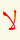

|
تُفِيدُ لزُومَ الوَقْف |
|  | تُفِيدُ النَّهْيَ عَن الوَقْف |
 |
تُفِيدُ بأنَّ الوَصْلَ أَوْلىٰ مَعَ جَوَاز الوَقْفِ |
 |
تُفِيدُ بأنَّ الوَقْفَ أَوْلىٰ |
 |
تُفِيدُ جَوَازَ الوَقْفِ |
 |
تُفِيدُ جَوَازَ الوَقْفِ بأَحَدِ المَوْضِيعَيْن وَ لَيسَ كِلَيْهِمَا |
 |
للدِّلَالَةِ عَلىٰ زيَادَةِ الحَرْف وَعَدَم النُّطق بهِ |
 |
للدِّلَالَةِ عَلىٰ زيَادَةِ الحَرْف حِينَ الوَصْل |
 |
للدِّلَالَةِ عَلىٰ سُكُونِ الحَرْف وَ وُجُوبِ النُّطق بهِ |
 |
للدِّلَالَةِ عَلىٰ وُجُود الإِقلَابِ |
 |
للدِّلَالَةِ عَلىٰ إظْهَار التَّنْوين |
 |
للدِّلَالَةِ عَلىٰ الإدغَام وَ الإخْفَاءِ |
 |
للدِّلَالَةِ عَلىٰ وُجُوبِ النُّطق بالحُروفِ المترُوكَةِ |
 |
للدِّلَالَةِ عَلىٰ وُجُوبِ النُّطق بالسِّين بَدَل الصَّاد. وَ إذَا وُضعَتْ بالأَسْفَل فالنُّطقُ بالصَّادِ أَشهَر |
 |
للدِّلَالَةِ عَلىٰ لزُوم المَدِّ الزّائِد |  |
للدِّلَالَةِ عَلىٰ مَوْضعِ السُّجُود , أمَّا كلِمَة وُجُوبِ السُّجُود فَقَدْ وُضعَ فَوْقَهَا خَطّ |
 |
للدِّلَالَةِ عَلىٰ بدَايةِ الأَجْزَاء وَ الأَحْزَاب وَ أنصَافِهَا وَ أَربَاعِهَا |
 |
للدِّلَالَةِ عَلىٰ نِهَايَةِ الآيَةِ وَ رَقَمِهَا |